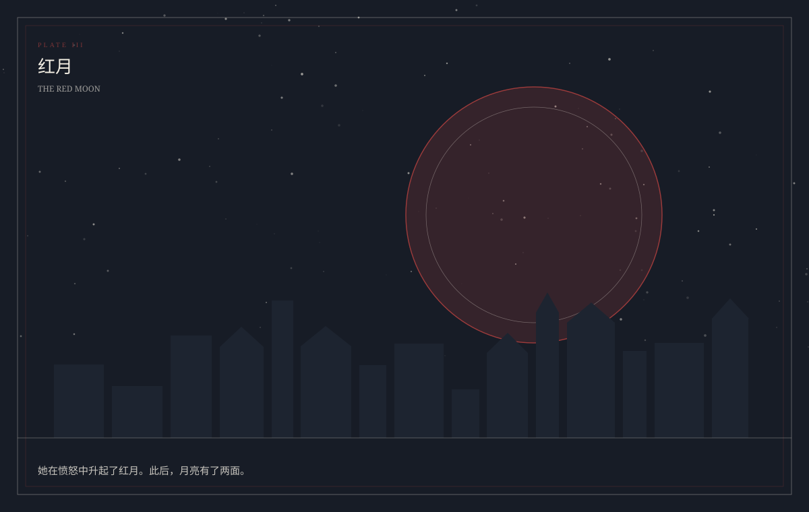

I / NOVEL
小说
MAIN STORY
从格兰蒂亚出发，经过芬特罗德、记忆森林、黄金之城、钢铁之城与无梦之城。路上的人各有各的理由，最后都走到同一个封印前。
筹备中 · 正文将先行发布
查看发布计划
小说 · 音乐 · 游戏
His Story
月亮升起之前，先把路走完。
一个由小说、音乐与游戏构成的联合企划。同一个世界，三种讲述方式：小说写人，音乐写气息，游戏让选择发生。
THE TRIPTYCH
小说、音乐、游戏不是三个衍生品，而是同一份设定的三种写法。
从格兰蒂亚出发，经过芬特罗德、记忆森林、黄金之城、钢铁之城与无梦之城。路上的人各有各的理由，最后都走到同一个封印前。
文字冒险承载路，卡牌承载战斗。文字冒险部分由 GodotADV 实现；卡牌部分以 1939 工作室的《Kards》为灵感，战区的数量、排布与容量由随机地图决定。
长歌首先是一首歌的名字。音乐编目前仍在筹备，曲目与主题会随小说与游戏的关键章节一起公布。
THE GAME
文字冒险部分负责「你遇见谁」；卡牌部分负责「你拿什么去换」。两者共用同一套人物、地理与规则，不互相解释，但互相证明。
先看怎么玩由 GodotADV 承载。场景、立绘、分支与存档都在同一个框架里；小说里没写出来的那部分，交给玩家去走。
随机地图、两个终端、40 张卡组。战区数量、排布与容量都由地图决定；三个阵营各自有一套节奏；英雄与天赋在构筑时合成一张牌，他们的死亡不是退场，是返场前的空白。
THE WORLD
魔力不是燃料，是原质在运动中的表现。把这件事想清楚，后面的战争、种族与禁忌才有地方落脚。
